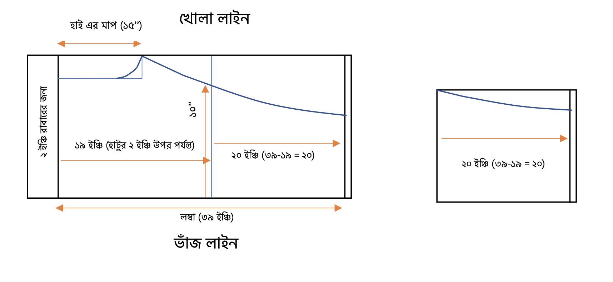

সারারা সেলোয়ার প্যাটার্ন ডায়াগ্রাম
নোটস:
হাটুর ২ ইঞ্চি উপরে কাটতে হবে।
ফিটিং এর মাপ নিতে হবে। এখানে ফিটিং এর মাপ ১৫ ইঞ্চি।
ফিটিং এর মাপের সাথে ৩ ইঞ্চি যোগ করতে হবে । ফিটিং যদি ১৫ ইঞ্চি
হয়, তাহলে (১৫+৩)/২ = ৯ + ১ = ১০ ইঞ্চি পর্যন্ত রেখে বাকিটা কেটে নিতে হবে।
তবে ৩ ইঞ্চি না নিয়ে ২ ইঞ্চিও রাখা যেতে পারে।
নিচের অংশটার সমপরিমাণ আরেকটা কাপড়ের অংশ কেটে নিতে হবে। (সাধারণত ফিটিং এর
৩ গুন পরিমাণ কাপড় দিয়ে কুচি বানাতে হয়)
নিচের অংশটুকুর হেম সেলাই করে কুচি দিয়ে উপরের অংশের সাথে সেলাই করে নিতে
হবে।